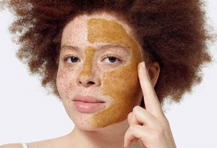

EXFOLIACIÓN DE LA PIEL
Cuando se habla de la belleza de la piel pensamos en hidratación, maquillaje y limpieza. Pero hay un gran olvidado en nuestra rutina: exfoliar la piel. Te contamos por qué es tan importante, cómo realizar una suave exfoliación y con qué frecuencia. ¡Regenera tu piel!

Exfoliar la piel ayuda a la regeneración celular de la piel tras retirar la acumulación de células muertas, limpia poros e impurezas y, gracias a este sencillo gesto, la piel está preparada para recibir y absorber cualquier principio activo que se le aplique a continuación.
¿Cómo que por qué exfoliar la piel? Muchos son sus beneficios, como te hemos explicado, pero para que sea totalmente efectivo debes hacerlo de la forma adecuada.
¿Dónde aplicarlo? El lugar idóneo es la ducha. Aprovecha el vapor del agua para abrir los poros. Además, así podrás exfoliar también el cuello y el escote cómodamente. No basta con aplicar el producto de forma azarosa. Hazlo mediante masajes circulares ascendentes y sobre la piel húmeda para que la exfoliación facial sea efectiva y evita el contorno de ojos, la zona de la piel más fina y sensible.
Retira el producto exfoliante con abundante agua tibia. Por último, como siempre, aplica tu tónico y crema hidratante. ¿Cada cuánto tiempo? Debes hacerlo durante todo el año sin importar la estación una vez a la semana o cada 15 días para evitar que tu piel se escame o sé que hay que darle tiempo para que se produzca la regeneración celular.